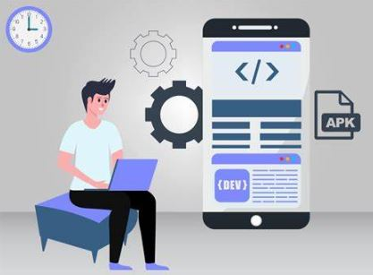
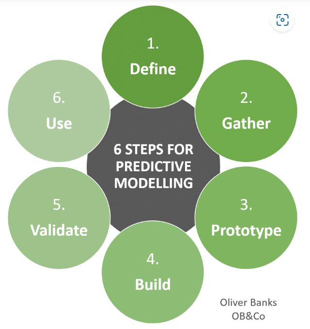
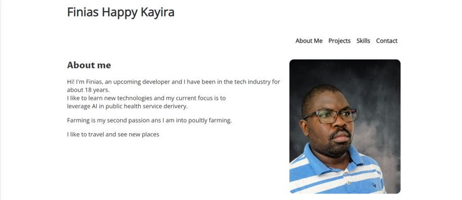

Tech Specialist & Web Developer
Hi! I'm Finias, a seasoned tech proffessional with over 18 years of experience in IT Systems and infrastructure management. I am a full stack web developer and web designer with experience in mainly JavaScript(React, Vue, Angular, Reddit),CSS, HTML and PHP. Obsessed with networks and system/application performance, user experience, and customer support. I take every oppurtunity to learn new and trending technologies and my current focus is to master AI to develope tools to improve public health service derivery.
Intergrity, honesty and self-improvement are my core values and they keep me going. They ensure that I stand for the truth, act ethically and honorably at all times, and that I am committed to lifelong learning, always seeking to grow intellectually and personally.
Farming is my second passion and I am into small scale poultly farming.
Projects
The 4Teez Farm Portifolio Project

The project was to develope the a web app for 4Teez farm. A family owned business project
aimed at
increasing business visibility and promoting business growth.
The Autism diagonistic Model

I assisted my spouse to develope a model which learns autism diagnosis fron
previously
collected data to diagnize new cases. The model has 82% prediction accuraccy.
The Finias Portfolio project-image

In this project, I built my personal website to showcase my skills what I am capable of doing
and letting anyone outthere that might need my skills.
Skills
Windows Admin/Networking: Active Directory, MS Azure, System Center, DHCP, SAN, NAS, Virtualization, Microsoft 365, VoIP, LAN, VPN
Collaboration Tools: SharePoint, Teams, Skype for Business, Zoom, JIRA
Computer Programming: Python, Java, JavaScript, R, SQL
Databases: MySQL, MSSQL Server 2000/5/8, Oracle
Data Science Experience and Tools: Python, R, Microsoft Power BI, Tensorflow(beginner), Hadoop(beginner), Spark (beginner)
Design and Simulation Software: MATLAB, Scilab
Web Technologies: HTML, CSS, XML
Mapping: ArcGIS, QGIS
Adobe: Photoshop, InDesign, and Illustrator
Version Control: Git, GitHub